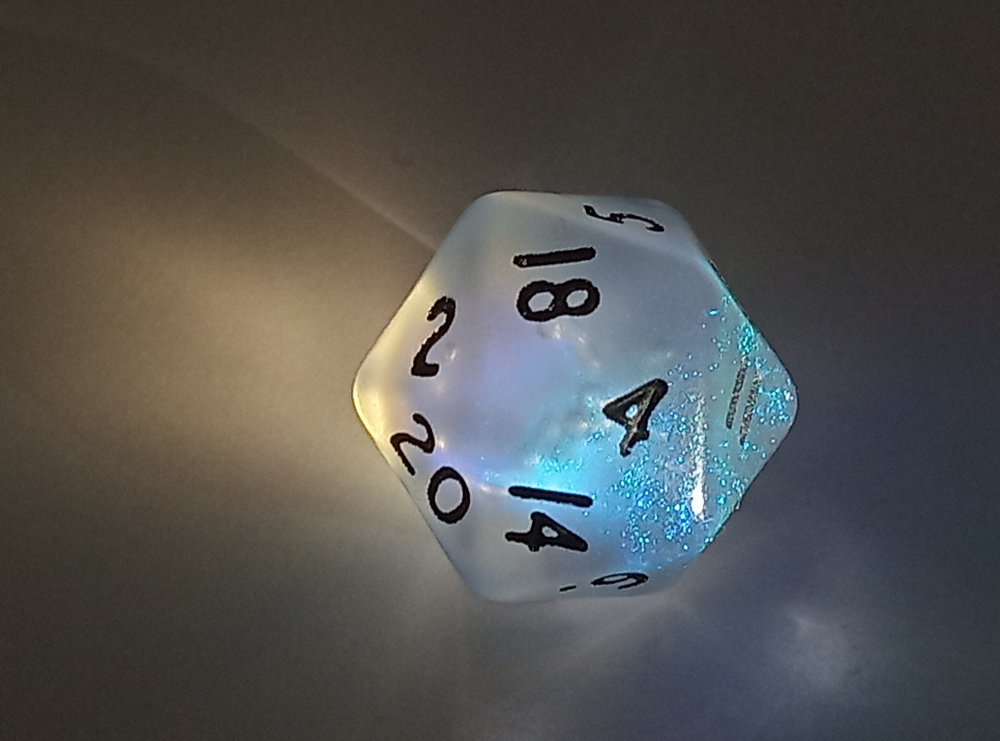

@charak
@charakWir würfeln uns ein Abenteuer
Bei Rollenspielen trainieren die Beteiligten Kooperation und Fantasie, vielleicht finde ich diese Spielform deshalb so spannend.
Seit einiger Zeit interessiere ich mich für Rollenspiele. Bei dieser Art von Spielen wird eine recht freie Handlung erzählt, die in ihrer endgültigen Form erst während des Spielens entsteht. Meist übernimmt eine Person die Spielleitung, plant die grobe Richtung der Geschichte und führt die übrigen Spieler:innen durch die Szenen. Die anderen schlüpfen in die Rollen der Hauptfiguren der Geschichte (darum „Rollenspiel“) und gestalten diese aus.
Ich habe mir unter anderem bei Rocket Beans TV die Videos zum Spiel „Telemar“ angesehen, im Podcast 2W12 etwas über verschiedene Aspekte der Spielleitung gehört, dem Erzählspiel „Gegen das Monster“ zugeschaut und ein paar Spieltipps und Theorie im Podcast 3W6 erfahren.
Die Würfel entscheiden mit
Damit nicht nur die Spielleitung über den Verlauf der Geschichte bestimmt, arbeiten viele Rollenspiele mit Würfeln. Beispielsweise erzählt die Spielleitung, dass in der nächtlichen Ruine aus einer dunklen Ecke plötzlich ein zerzauster Wolf hervorspringt und nach einem der Abenteurer schnappt. Der entsprechende Spieler muss dann würfeln. Wirft er mindestens den zuvor bestimmten Wert, kann seine Figur rechtzeitig ausweichen; ansonsten erhält er eine böse Bisswunde. Diese Verletzung kann anschließend Auswirkungen auf die Figur haben und womöglich die gesamte Geschichte verändern, zum Beispiel ist die Figur danach weniger geschickt (sie muss für erfolgreiches Klettern einen höheren Wert erwürfeln), sie verwandelt sich in einen Werwolf oder die Gruppe muss nun erst ein Heilmittel suchen.

Je nach Art des Rollenspiels werfen die Spielenden nicht nur den „normalen“ Würfel mit sechs Seiten (= W6), sondern haben je nach Zweck ein ganzes Arsenal zur Verfügung. Im bekanntesten Rollenspiel „Dungeons & Dragons“ ist der häufigste Würfel ein W20 (mit zwanzig Seiten, siehe Foto). Welchen Schaden bestimmte Waffen anrichten wird mit einem 8-seitigen (W8), 10-seitigen (W10) oder 12-seitigen Würfeln (W12) ausgelost. Zwei 10-Seiter (= 2W10) helfen, Prozentangaben und Zufallsereignisse aus langen Listen zu erwürfeln (ein Würfel für die Zehnerstelle, der zweite für die Einer). Es gibt auch den W4, der z. B. die Wirksamkeit von Zaubersprüchen bestimmt. Für mich sind das jedoch recht kleinteilige Regeln, da bin ich raus. Wer mag, erfährt mehr dazu u. a. auf Roll My Dice (engl.).
Vielseitige Spielmechaniken
Außer Würfeln können auch andere Gegenstände für Zufalls-Entscheidungen sorgen. Darum stimmt der Titel dieses Blogartikels nicht so ganz, wenn es allgemein um Rollenspiele geht. Bei „Gegen das Monster“ gibt es keine Spielleitung, dafür ziehen die Spielenden reihum Karten aus einem französischen Deck (52 Karten). Jeder Karte ist eine Frage zugeordnet, die etwas über den eigenen Spielcharakter und über das zu jagende Monster aussagt (z. B. „Was an dir ist eine Gefahr für das Monster?“).
Im Horrorspiel „Ten Candles“ entscheiden verlöschende Kerzen mit, wie lange eine Spielrunde dauert und wie viele Würfel bei einer (hoffentlich guten) Entscheidung mitwirken dürfen. Für das Beziehungsspiel „Star Crossed“ benötigt man einen Wackelturm (Jenga), der natürlich irgendwann einstürzt und damit das Ende besiegelt.
Bereits gespielt habe ich Krimispiele, die in einer verschlossenen Packung daher kommen. Als Ermittler:innen versuchen alle, den geschilderten Kriminalfall mit den gegebenen Hinweisen, Spuren und Materialien zu lösen. Häufig gibt es ein dazugehöriges Internetportal, wo man weitere Beweise zum Fall bekommt, Ermittlungsergebnisse sammeln kann und schließlich die vermutete Lösung zur Bestätigung einreichen kann.
Ein Trend in den 1980ern waren interaktive Spielbücher (Stichwort: „Choose Your Own Adventure“) – im Grunde Rollenspiele in Buchform für eine Person. Die Geschichte darin ist in nummerierte Abschnitte gegliedert, die aber nicht in der abgedruckten Reihenfolge gelesen werden. Stattdessen ist am Ende eines Abschnitts eine Entscheidungsfrage mit Verweisen auf dazu passende Handlungsverzweigungen, Beispiel: Öffnest du nun die Tür hinter dem Wandteppich (lies weiter im Abschnitt 51) oder gehst du die Kellertreppe hinunter (weiter bei 238)? Manchmal soll man als Leser:in für eine Entscheidung würfeln und eine Liste mit Ausrüstung und Gesundheitspunkten führen.
Ein weiteres Element bei Rollenspielen kann ein Spielplan mit 1-Zoll-Raster sein, auf den die Umgebung gezeichnet ist. Dort bewegen sich die Spiel-Charaktere in Form kleiner Figuren und treffen auf Gegner. Mögliche Aktionen hängen dann von der Position auf dem Spielfeld ab, zum Beispiel ob ein Nahkampf möglich ist oder eine Tür geöffnet werden kann.
Typisch für Rollenspiele sind auch Charakterbögen (Beispiel für Dungeons & Dragons). Darin werden zu den Figuren der Spieler:innen die jeweiligen Stärken, Fähigkeiten, Lebenspunkte, vorhandene Ausrüstung, etc. festgehalten.
Über kurz oder lang
Solche Charakterbögen sind hilfreich, um die Eigenschaften seiner Figur und den aktuellen Status (Gesundheit, Waffen, Schätze, verbrauchte Zauber, …) zu dokumentieren. Schließlich laufen manche Rollenspiele als „Kampagnen“ mit mehreren Zusammenkünften über eine längere Zeit – da ist es gut, die Übersicht zu behalten und seinen Charakter nach und nach zu entwickeln.
Genauso gibt es den „One Shot“, also ein Rollenspiel, das in einer Sitzung von 2–3 Stunden fertig durchgespielt ist. Ein Beispiel, was mir gut gefällt, wäre da „Die Werwölfe von Düsterwald“, wo alle in die Rolle von Dorfbewohnern (oder heimlichen Werwölfen) schlüpfen und in wechselnden Tag-/Nachtphasen versuchen, etwas über die Identität der anderen Spieler:innen herauszufinden.
Einige Rollenspiele kann man auch nur ein einziges Mal spielen, wie die oben genannten Krimispiele oder auch Escape-Spiele, bei denen man Rätsel lösen muss, um den eigenen Spiel-Charakter aus einem verschlossenen Raum zu befreien. Einmal gespielt, kennt man alle Hinweise und Lösungen.
Was fasziniert mich am Rollenspiel?
Ehrlich gesagt: Keine Ahnung; manche Aspekte daran finde ich auch eher langweilig. Ich hatte gehofft, mein Interesse an Rollenspielen mit diesem Blogartikel ein bisschen zu analysieren. Vermutlich ist es eine Summe aus verschiedenen Eigenschaften:
-
Mich reizt die Balance zwischen dem willkürlichen Erzählen der Spielleitung, den teilweise streng definierten Spielregeln und auch der Anforderung, dass die Geschichte spannend, nachvollziehbar und abwechslungsreich sein muss, damit alle am Spieltisch ihren Spaß daran haben.
-
Viele Rollenspiele sind in einer Fantasy- oder Science-Fiction-Welt angesiedelt, was mich weniger anspricht. Darum finde ich epische, fortlaufende Abenteuerrunden, bei denen sich der eigene Charakter über Monate und Jahre entwickelt, nicht so reizvoll (Puristen pochen vermutlich darauf, dass nur das die wahren Rollenspiele sind). Gut, eine Spielwelt muss natürlich genügend Herausforderungen, Risiken und Geheimnisse bieten … das geht besser in Genres, die nicht ganz so alltäglich sind.
-
Spannend finde ich, wie die Dynamik in der Spielgruppe abläuft und welche soziale Interaktion es gibt. Mir haben Spiele, bei denen alle für ein gemeinsames Ziel kooperieren, schon immer etwas besser gefallen als solche, wo einer möglichst haushoch über den anderen triumphieren muss. Bei den meisten Rollenspielen bist du recht schnell raus, wenn du gegen deine Gruppe agierst. Man braucht also Mitspieler:innen, die sich auf so eine Erzählung einlassen wollen. Alle Beteiligten müssen mitwirken, damit die Geschichte vorankommt, nicht langweilig, unglaubwürdig oder unfreiwillig komisch wird.
-
Und schließlich ist ein 20-seitiger Würfel schon irgendwie ein magischer Gegenstand, nicht wahr? Den oben abgebildeten W20 habe ich übrigens letztes Jahr bei Das Traumwerk in Regensburg wohlüberlegt ausgesucht. Der Ladeninhaber scheint ein begeisterter Rollenspieler zu sein, mit dem man sich wahnsinnig gut über viele Themen austauschen kann.
Über eure Erfahrungen und Vorlieben bei Rollenspielen freue ich mich in den Kommentaren!